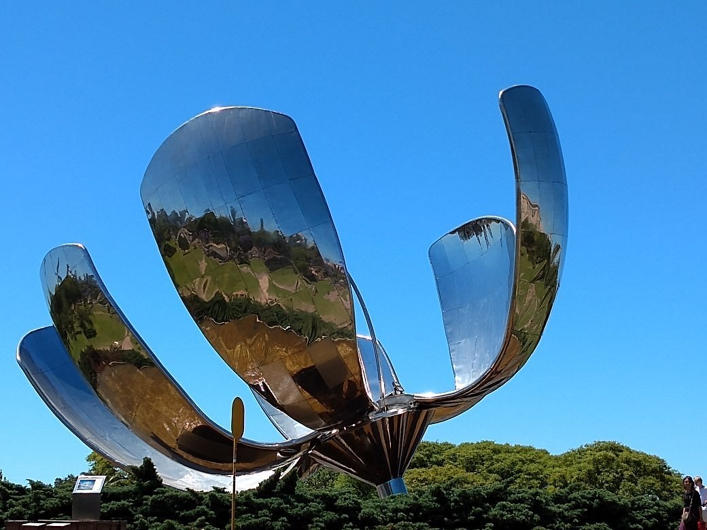

Volver
Título del artículo
Categoría del artículo 
Autor
Texto del artículo. Por ejemplo: El Betis de Manuel Pellegrini sigue sin dar la talla en Europa. Esta noche ha empatado con el Copenhague en el Benito Villamarín en "un partido disputado, sobre todo en la posesión del balón, que ellos la tienen mucho. Una vez la tuvimos, intentamos hacer daño, pero no pudimos concretar el segundo gol. Son dos puntos perdidos, pero esto está recién comenzando. Quedan cuatro partidos y vamos a lograr el objetivo de clasificar". Es el análisis del técnico verdiblanco. "Jugamos con dos rivales importantes en sus ligas; uno que nos ganó en un córner y este, que nos empató de penalti. El objetivo es clasificar y estoy seguro de que en los cuatro partidos que quedan lo vamos a lograr", continuó. Por delante quedan cuatro partidos clave en la Conference sin margen de error. "Quiero clasificar. Si estamos entre los ocho primeros, mejor, pero si tenemos que jugar una ronda intermedia no pasa nada. Si clasificamos entre los ocho nos ahorramos un par de partidos, pero mi objetivo es clasificar y estoy seguro de que lo vamos a conseguir", afirmó. "Lo importante es estar metidos en esta temporada. Sabemos lo que tenemos que hacer, sacar la clasificación. No siempre se pueden sacar los tres puntos, aunque hoy los merecimos. Adrián no tuvo ningún tiro a portería". Rendimiento del equipo: "Cuando tuvimos el balón, tratamos de apretar más y llegar. Insisto en que jugamos ante un equipo que maneja muy bien el balón, no es fácil recuperar posesiones". El penalti: "Fue una acción involuntaria. No lo vio Héctor y, desafortunadamente, lo golpeó en el área". El cambio de Bakambu, por precaución: "Cédric sintió una contractura y no quisimos arriesgarlo para el segundo tiempo. Parando, no creo que tenga problemas. Espero que esté para el domingo". No hay crisis: "No creo en las crisis por un partido más o menos. Tenemos que clasificarnos. Nos hubiera gustado puntuar más de un punto de seis, pero aún quedan doce. Una vez pase lo sucedido, se queda solamente en anécdota".